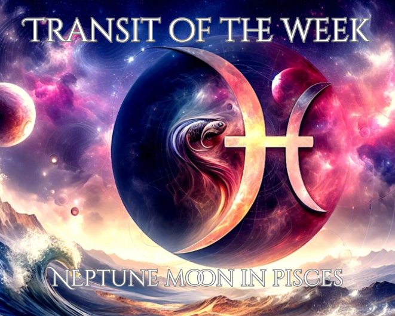

Every Thursday
Weekly planetary forecasts, live daily horoscopes for all 12 signs, a live moon phase guide, and a complete reference for understanding your birth chart placements.
A day-by-day look at what the planets have in store — Moon signs, major transits, and the energetic theme of each day, Sunday through Saturday.

This dreamy conjunction heightens intuition, creativity, and emotional sensitivity. It opens the door to spiritual insight, deep compassion, and powerful inner healing. A beautiful time for divination, meditation, artistic expression, and connecting with your higher self.
✧ Best for: Psychic work, dream interpretation, creative flow, emotional release ✧ Avoid: Escapism, over‑idealizing situations, ignoring practical details
Select your sign for today's horoscope — including your daily description, lucky number, lucky color, mood, and compatible sign. Updated fresh every single day, no key required.
Astrology Thursday is your weekly guide to understanding the foundations of your birth chart. Your free reading on the main page reveals your Sun, Moon, and Rising signs — the three constellations that shape your identity, emotions, and outward presence.
Your Sun sign reveals your identity, purpose, and the energy you radiate into the world. It is the constellation your Sun was in at the moment of your birth.
Your Moon sign reflects your emotions, instincts, and subconscious needs. It shows how you nurture and how you seek comfort.
Your Rising sign (Ascendant) is the constellation rising on the eastern horizon at your birth. It shapes your first impressions, appearance, and approach to life.
Use this guide to interpret your Big Three. Each sign expresses differently depending on whether it is your Sun, Moon, or Rising.
Sun: Bold, fiery, and born to lead.
Moon: Passionate instincts and fierce loyalty.
Rising: Direct, energetic, unstoppable presence.
Sun: Grounded, sensual, steady.
Moon: Loyal emotions and deep comfort needs.
Rising: Calm, earthy, magnetic presence.
Sun: Curious, expressive, adaptable.
Moon: Quick-changing emotions, mental processing.
Rising: Social, witty, youthful energy.
Sun: Nurturing, intuitive, protective.
Moon: Deep emotional tides and intuition.
Rising: Soft, empathetic, gentle presence.
Sun: Radiant, creative, expressive.
Moon: Warm-hearted emotions and loyalty.
Rising: Confident, charismatic, magnetic.
Sun: Analytical, helpful, detail-oriented.
Moon: Thoughtful emotions, internal processing.
Rising: Clean, refined, observant.
Sun: Harmonious, charming, relationship-focused.
Moon: Peace-seeking emotions.
Rising: Graceful, diplomatic presence.
Sun: Intense, transformative, powerful.
Moon: Deep emotional waters and intuition.
Rising: Mysterious, magnetic presence.
Sun: Adventurous, philosophical, free.
Moon: Restless emotions, truth-seeking.
Rising: Bold, optimistic, open-minded.
Sun: Ambitious, disciplined, structured.
Moon: Reserved emotions, self-control.
Rising: Mature, serious, grounded.
Sun: Innovative, unique, visionary.
Moon: Detached emotions, intellectual.
Rising: Eccentric, futuristic, original.
Sun: Dreamy, mystical, compassionate.
Moon: Sensitive emotions, psychic intuition.
Rising: Ethereal, artistic, soft-spoken.
The houses represent different areas of life. Your personal placements (which planet is in which house) require a full chart — available through our premium readings.
Appearance, personality, first impressions, the Ascendant.
Money, possessions, self‑worth, material security.
Thinking, speaking, writing, siblings, short travel.
Family, ancestry, emotional foundations, private life.
Romance, art, fun, children, self‑expression.
Daily routines, health, service, habits.
Marriage, relationships, contracts, one‑on‑one dynamics.
Sex, death, rebirth, shared resources, shadow work.
Travel, philosophy, higher learning, spirituality.
Public image, ambition, achievements, reputation.
Friendships, groups, social causes, hopes for the future.
Dreams, intuition, the subconscious, hidden realms.
A permanent reference for all 12 signs — element, ruling planet, modality, and core essence.
The pioneer. Bold, courageous, fiercely independent. Acts first, reflects later. Natural leader fuelled by instinct and desire.
The builder. Sensual, loyal, deeply reliable. Creates beauty and security. Resistant to change; unshakeable when committed.
The communicator. Witty, curious, endlessly adaptable. Lives in the world of ideas. Can see every angle — challenge is choosing one.
The nurturer. Deeply intuitive, protective, emotionally intelligent. Home and family are everything. Feels everything deeply.
The sovereign. Radiant, generous, born to lead and inspire. Rules the heart. Thrives in the spotlight; withers without recognition.
The healer. Analytical, devoted, deeply service-oriented. Notices everything. Improves everything they touch. Greatest gift: discernment.
The diplomat. Graceful, fair-minded, relational. Seeks beauty and balance in all things. Struggles to choose; excels at creating harmony.
The transformer. Intense, perceptive, magnetically powerful. Goes where others won't. Sees what others can't. Rises from every ending.
The seeker. Philosophical, adventurous, radiantly optimistic. Chases truth and the horizon. Expansive mind, restless spirit.
The architect. Disciplined, ambitious, quietly powerful. Builds empires through patience and integrity. Mastery is the only goal.
The visionary. Original, humanitarian, intellectually brilliant. Lives in the future. Fights for the collective. Fiercely individual.
The mystic. Compassionate, intuitive, spiritually gifted. Dissolves boundaries and swims in feeling. Greatest gift: unconditional love.